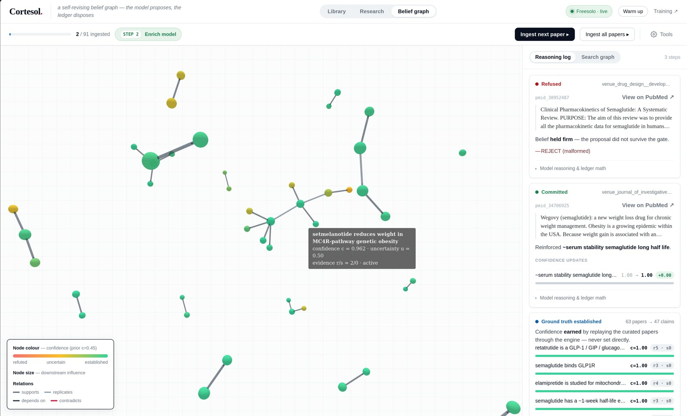
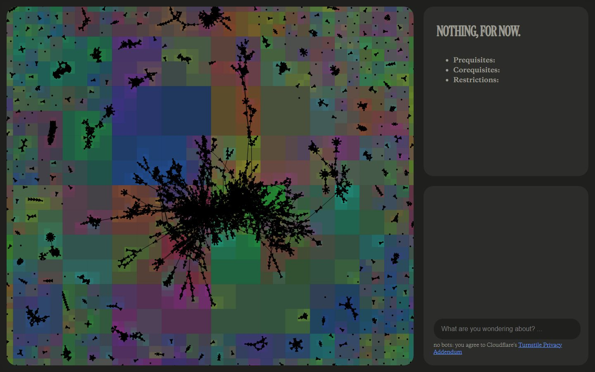
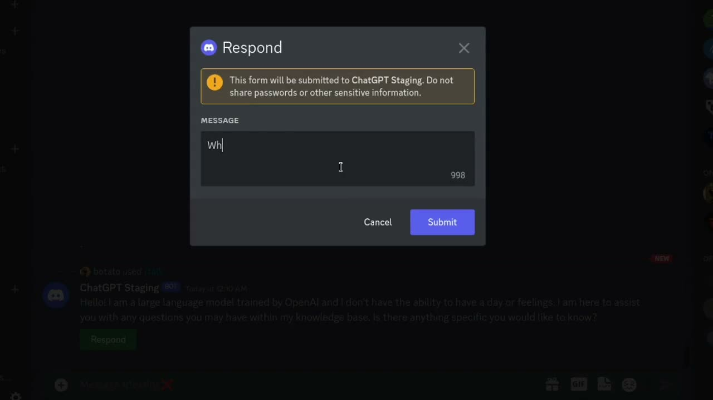
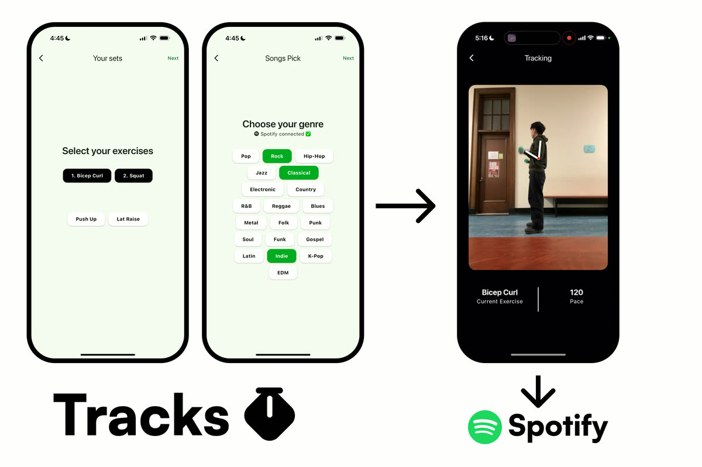
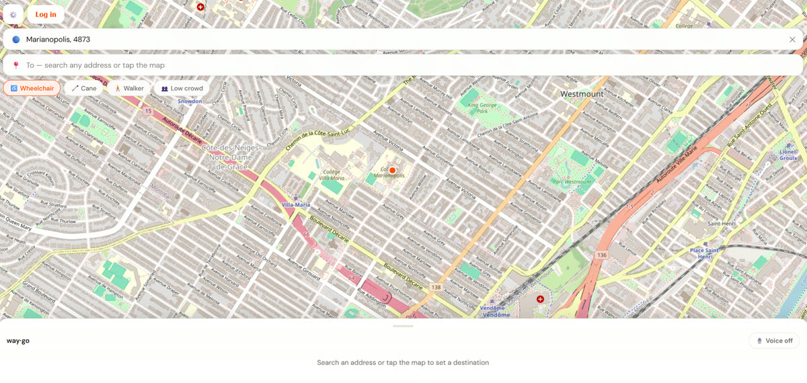
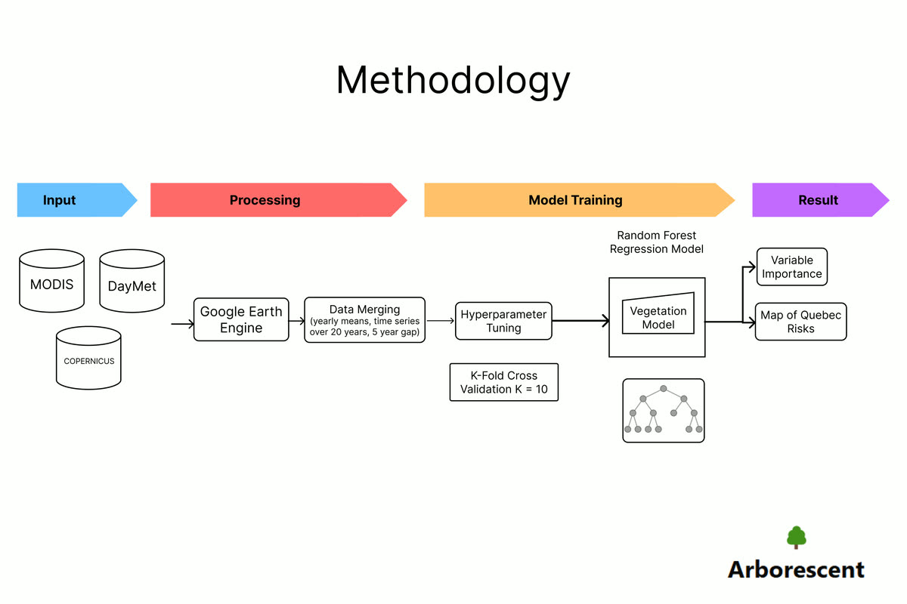
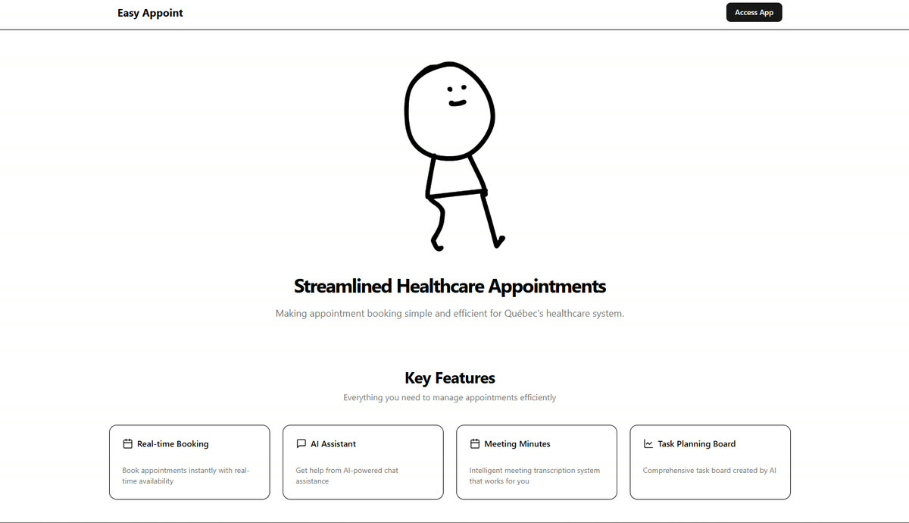

Aidan Taha
AI safety researcher, builder, writer, learner. CS and Stats at McGill.

2026 · Hack the 6ix finalistCortesol
A memory for research agents that can change its mind, and show why.
- Harvard MADSys Lab LLM evaluations for sovereign models
- AI Alignment McGill co-director; revived the club
- McGill Joint Honours CS & Statistics

May 2026 – nowMcGill Course Assistant
Organized 90+people at the AI Control Hackathon
#13 Product of the DayTask Kitchen
Turns a student's to-do list into a schedule they can follow.
Sep 2025CD Player Kidnapping Saga
start here. there's a kidnapping (sort of)
Dec 2022 · age 15ChatGPT in Discord
METR reward hacking Top 4globally, plus two security issues disclosed
- MIT AI Alignment AISF fellow
- University of Basel medical image segmentation
- Holopin integrations lead
- BrébeufHx co-president
On deriving discrete random variables (hear me out)

2025Tracks

2026Rollz
Aug 2025What's AI Safety even about?

2025Arborescent
2023–24 · MYPFracture detection
Seven models, five X-ray datasets, one Flutter app.

2025